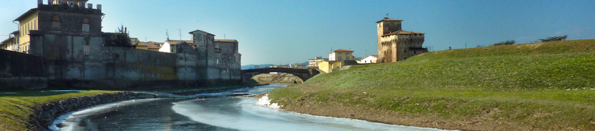

<!DOCTYPE html>
<html lang="en">
<head>
    <meta charset="UTF-8">
    <meta http-equiv="X-UA-Compatible" content="IE=edge">
    <meta name="viewport" content="width=device-width, initial-scale=1.0">
    <title>Interactive Map</title>
    
    <link rel="stylesheet" href="https://unpkg.com/leaflet@1.9.3/dist/leaflet.css"
     integrity="sha256-kLaT2GOSpHechhsozzB+flnD+zUyjE2LlfWPgU04xyI="
     crossorigin=""/>
 <!-- Make sure you put this AFTER Leaflet's CSS -->
    <script src="https://unpkg.com/leaflet@1.9.3/dist/leaflet.js"
     integrity="sha256-WBkoXOwTeyKclOHuWtc+i2uENFpDZ9YPdf5Hf+D7ewM="
     crossorigin=""></script>

     <link rel="stylesheet" href="mappa.css"/>
</head>
<body>
    <div id="map"></div>
    <script>
        var map = L.map('map').setView([43.824443, 11.130834

], 13);
        L.tileLayer('https://tile.openstreetmap.org/{z}/{x}/{y}.png', {
    maxZoom: 19,
    attribution: '&copy; <a href="http://www.openstreetmap.org/copyright">OpenStreetMap</a>'
}).addTo(map);

    var marker = L.marker([43.824443, 11.130834])
    .bindPopup(
        `
        <div>
            <div>
                
                </img>
            </div>
            Bada Campi
        </div>
    `).addTo(map);

var circle = L.circle([43.773608590642404, 11.256010694227232], {
    color: 'red',
    fillColor: '#f03',
    fillOpacity: 0.5,
    radius: 15000
}).addTo(map);

var polygon = L.polygon([
    [43.82707175870124, 11.124430910600589],
    [43.7948641024209, 11.14503027342392],
    [43.80799701321189, 11.177989253941252],
    [43.834779932980695, 11.131189192835915]
]).addTo(map);

    </script>
</body>
</html>